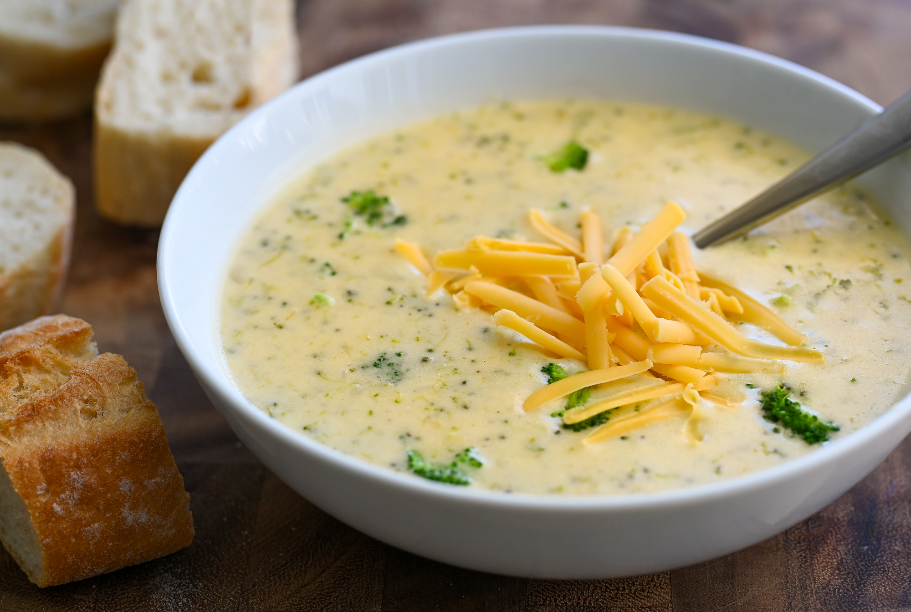

Broccoli Cheddar Soup

A deliciously cozy recipe for Broccoli Cheddar Soup.
It's great served in a sourdough bread bowl or with a side of crusty bread for dipping.
I could eat broccoli cheddar soup no matter what the weather is because I just love it that much.
This soup is the ultimate comfort food!
Ingredients
- 3 tablespoons butter
- 1/4 small onion, chopped
- 2 tablespoons all-purpose flour
- 1 cup half-and-half
- 1 and 1/2 cups chicken broth
- 2 cups chopped broccoli
- 1 carrot, chopped
- 1 celery stalk, chopped
- 1 and 1/4 cups shredded mild Cheddar cheese
Steps
- Melt butter in a stock pot over medium-high heat; add onion and saute until tender, 3 to 4 minutes. Whisk in flour and continue to stir until mixture turns golden brown, about 5 minutes. Slowly add half-and-half to onion mixture, stirring until mixture is smooth. Add chicken broth; season with salt and ground black pepper.
- Reduce heat to medium-low and simmer mixture until thickened, about 10 minutes. Add broccoli, carrot, and celery. Simmer until vegetables are tender yet crisp, about 20 minutes.
- Reduce heat to low. Add Cheddar cheese to soup and cook, stirring occasionally, until cheese melts, about 5 minutes.